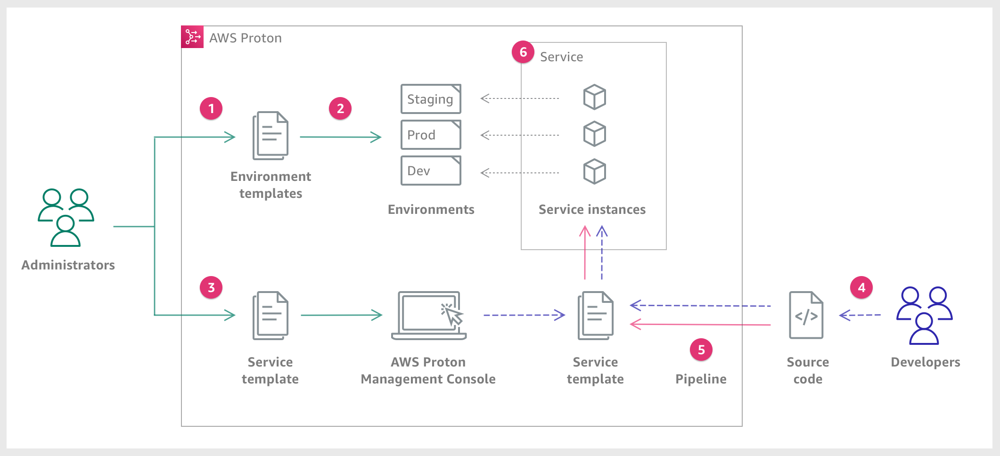

移行後アーキテクチャとアーキテクチャとモダナイゼーション¶
クラウドジャーニー¶
移行後に、クラウドの最適化を進め、継続的な改善していくことをクラウドジャーニーと呼ぶ
コンテナ¶
EC2にDockerサーバーを構築して運用することも可能だが、運用が煩雑になるため、コンテナ管理サービスを利用することが望ましい。コンテナオーケストレーションサービスとしてECSとEKS、アプリケーションをシンプルにデプロイするApp Runnerを解説する。
ECS¶
ECRに保存したイメージを利用して、クラスタ、タスク定義、サービス設定を行うことでコンテナを管理することができる。
ECR¶
コンテナイメージをリポジトリという単位で管理することができる。 ECS/EKS/APpRunnerなどのコンテナ実行サービスから使用することができる。
クラスタ¶
コンテナを実行するサービスとタスクのグループであり、アクセス権限やコスト観点で分離する。 EC2タイプとFargateタイプのこの時点で選択する。
タスク定義¶
具体的なコンテナの中身に対する設定を行う。具体的にはコンテナイメージ、タスクサイズ、ポートや起動するコンテナに対するIAM Roleなどを定義する。
サービス¶
コンテナをどのように起動するかの設定を行う。具体的には、実行するタスク定義やコンテナを起動するVPCやSG、スケーリング設定、ALBとの接続などを設定する。
ネットワークモード¶
bridge (デフォルト)¶
説明: Dockerの標準的なブリッジネットワークモードを使用します。
タスク内の各コンテナはホストインスタンス上のDockerブリッジ (docker0) を経由して通信します。 各タスクはホストインスタンス上での固有のポートマッピングを必要とします。このため、同じポートを使用する複数のタスクを同じホストインスタンス上で同時に実行することはできません。 ただし、8080ポートが利用されている場合、別のホストポート、例えば8081をマッピングして、内部的にはコンテナの8080にルーティングするように設定することは可能です。
host¶
説明: ホストのネットワークモードを使用します。
タスクのネットワークはEC2インスタンスのネットワークスタックを直接使用します。 タコンテナはホストのネットワークスタックを直接使用するため、コンテナ内のポートとホストのポートが直接一致します。
awsvpc¶
説明: タスクごとに独自のネットワークインターフェースを持つモードです。
各タスクは独自のENI (Elastic Network Interface) を持ち、プライベートIPアドレス, セキュリティグループ, ネットワークACLなどを持ちます。 各ECSタスクには独自のElastic Network Interface (ENI)が割り当てられ、そのENIには独自のプライベートIPアドレスが与えられます。このため、ホストインスタンス上でのポートの競合を心配する必要がありません。 Fargateでのタスク実行時や、VPC内での特定の通信ルールが必要な場合などに適しています。 タスク内のコンテナは同じネットワークインターフェースを共有します。
none¶
説明: タスク内のコンテナは外部のネットワークと通信しないモードです。
タスクが外部ネットワークと通信することはできません。 タスク内の通信は可能です。
Proton¶
コンテナのインフラ部分とサービス部分をテンプレートから作成することができるサービス。
インフラ部分：環境テンプレート
VPC
IAM Role
ECSクラスタ
サービス部分：サービステンプレート
ALB
ECSタスク
ECSサービス
ECR
CodePipeline
 公式ドキュメント
EKS¶
コンテナのオーケストレーションサービスであるKubernetesのマネージドサービス。 オンプレミスから移行する際に利用することができ、AWSのELBやIAM、VPC、CloudTrailなどと統合されている。
Amazon AppRunner¶
GithubやECRっと統合することによって、Appを継続的にデプロイ運用することができる。 起動するためのインフラの管理が全て不要になるため、インフラの知識なく簡単にアプリ開発とデプロイができる。
Amazon Managed Service for Prometheus¶
Prometheusというコンテナで構築されるマイクロサービス向けのモニタリングアラートサービスで、ECSとEKSと統合されている。
Amazon Managed Service for Grafana¶
GrafanaはKibanaのようにさまざまなデータソースを可視化するサービスであり、Prometheusもデータソースとして利用できるため、ECSやEKSから得られたデータを可視化することができる。
Kinesis¶
継続的に生成され続けるストリームデータについて、扱い処理するためのサービス。
Kinesis Data Streams¶
ストリームデータを収集して順番通りにリアルタイム処理させることができる。 ConsumerはLambdaやECSなどが想定される。 データはシャードに割り振られて、シャードにより性能が決まるが、シャードを自動でスケールしてくれるオンデマンドモードが利用できる。
Kinesis Data Firehose¶
大量のデータを指定した先へ配信する。AWSサービスであればS3やRedshiftなどに配信することができる。 配信タイミングは設定ができ、サイズが溜まったら配信したり、指定した時間が経過すると配信したりすることができる。
Kinesis Data Analytics¶
Data StreamsやData Firehoseから配信されるデータをSQLを利用して分析し、分析結果を再度配信する。
Kinesis Video Streams¶
動画に関する配信に特化したサービスで、Rekognitionなどと統合することで、分析をリアルタイムに行うことができる。
MSK(Managed Streaming for Apache Kafka)¶
Kafkaのクラスターをマネージドに提供するサービス。VPCを指定して複数のAZにクラスタを起動させることができる。